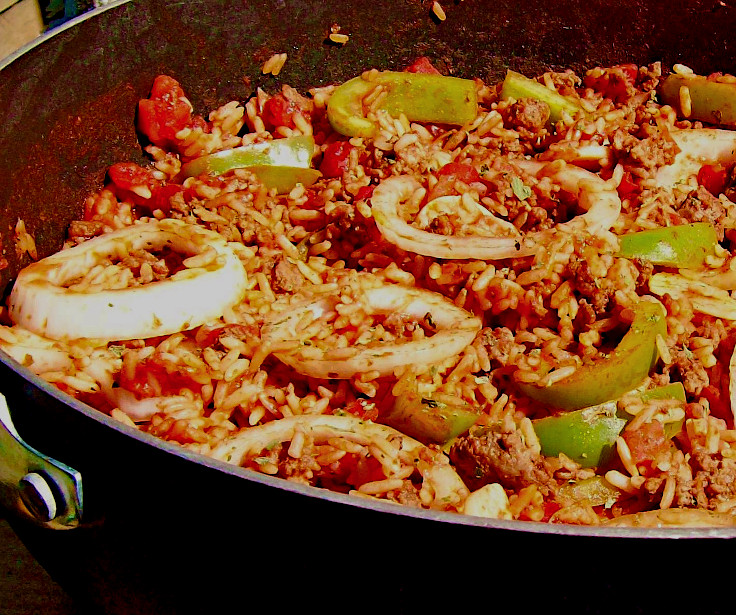

Spanish Rice

Ingredients
- 250 g SPAR Lasagne Sheets
MEAT SAUCE
- 30 ml SPAR Pure and Mild Olive Oil
- 1 large onion, finely chopped
- 2 cloves garlic, crushed
- 125 g SPAR Butcher’s Best Streaky Bacon, finely chopped
- 30 ml SPAR Pure and Mild Olive Oil
- 500 g SPAR Tender and Tasty Lean Beef Mince/li>
- 100 g button mushrooms, sliced
- 410 g can SPAR Diced Tomatoes with juice
- 125 ml Olive Brook Pinnacle Collection Pinot Noir / Chardonnay
- 1 SPAR Beef Stock Cube, crumbled
- 5 ml each dried oregano and dried basil salt and freshly ground
- SPAR Black Peppercorns to taste
Steps
-
For the cheese sauce, melt butter in a saucepan. Stir in flour and cook
for 1 minute.
-
Gradually stir in milk and cream, whisking continuously until the
mixture is smooth and thickened. Season to taste. Leave covered until
layering.
-
In a greased 20 x 30 cm oblong oven dish, using 250 g SPAR Lasagne
Sheets, alternately layer white sauce, then SPAR Lasagne Sheets, then
meat sauce in single layers. Never overlap the lasagne.
- Continue layering in this order, finish with white sauce.
-
Sprinkle with a mixture of 50 g grated Parmesan and 100 g grated Cheddar
cheese.
- Set aside for at least 30 minutes.
-
Pre-heat oven to 180° C. Bake for 30 minutes. Allow to cool for 10
minutes before serving.
Return to top
Return to main page